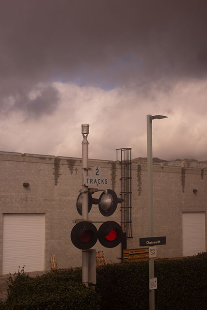

For as long as I can remember, I've been an avid learner, reader and storyteller. Albeit an arduous process, my journey has been shaped by a deep curiosity of the world around me as well as a desire to gather a diverse array of tales that promote connection, transport those who witness it to a new realm, and perhaps even take inspiration from my own experiences. In this photo essay, I utilize a camera's capability to instantly capture a moment in time during several trips between Los Angeles' Union Station and San Jose's Diridon Station. I do hope you find some level of enjoyment as you embark on this digital journey.